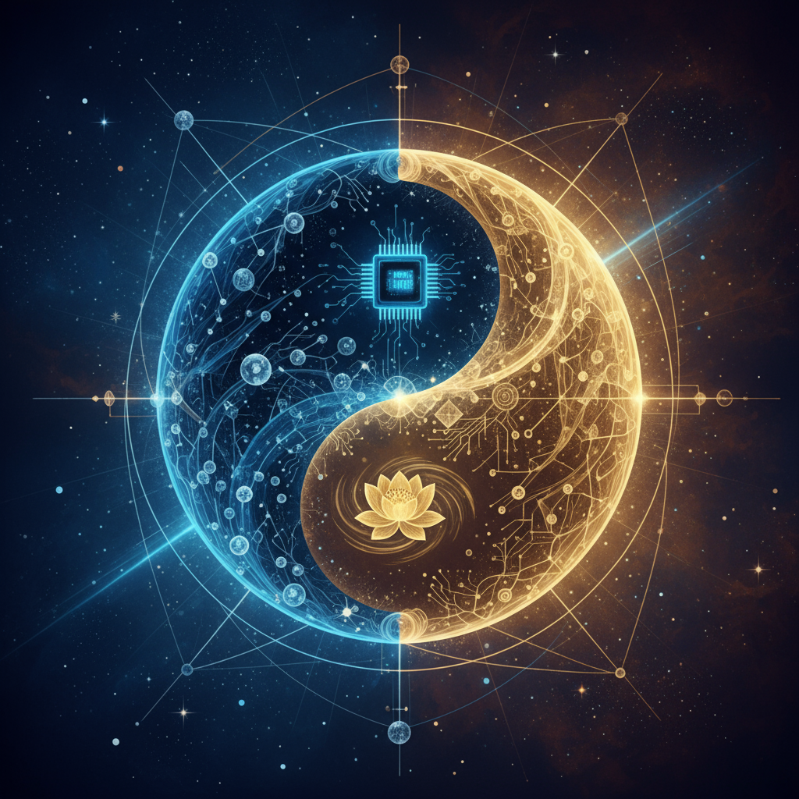

探索东方古老智慧与西方现代科学的完美融合
含义：天、刚健、创造、进取
五行：金
特性：代表天的力量，象征刚健不息的精神。在计算机系统中，对应着强大的计算能力和创造性的算法设计。
现代意义：在人工智能中体现为创新能力和突破性思维，是推动技术进步的核心动力。
含义：地、柔顺、包容、承载
五行：土
特性：代表大地的品格，象征包容万物的胸怀。在系统中体现为基础架构的稳定性和数据的承载能力。
现代意义：对应着系统的稳定性和可靠性，是所有智能运算的坚实基础。
含义：雷、震动、奋起、觉醒
五行：木
特性：代表雷电的力量，象征突发的觉醒和震撼。在系统中体现为快速响应和突发处理能力。
现代意义：对应着系统的实时处理能力和对外部刺激的快速反应机制。
含义：风、顺从、渗透、温和
五行：木
特性：代表风的特质，象征温和而持续的渗透力。在系统中体现为数据的流动和信息的传播。
现代意义：对应着网络通信和数据传输的流畅性与适应性。
含义：水、险陷、智慧、流动
五行：水
特性：代表水的智慧，象征柔中带刚的智慧和适应能力。在系统中体现为算法的灵活性和智能决策。
现代意义：对应着机器学习和自适应算法，能够根据环境变化调整策略。
含义：火、光明、依附、温暖
五行：火
特性：代表火的光明，象征照亮黑暗的智慧之光。在系统中体现为数据分析和洞察能力。
现代意义：对应着数据挖掘和模式识别，能够从复杂数据中发现隐藏的规律。
含义：山、静止、阻止、稳定
五行：土
特性：代表山的稳重，象征坚定不移的定力。在系统中体现为安全机制和保护措施。
现代意义：对应着系统安全和数据保护，确保智能系统的可靠运行。
含义：泽、喜悦、沟通、润泽
五行：金
特性：代表泽的喜悦，象征和谐沟通的能力。在系统中体现为用户交互和界面设计。
现代意义：对应着人机交互和用户体验设计，让技术更加人性化和易用。
传统二进制计算系统虽然在处理速度和精度上取得了巨大成功，但在模拟人类思维方面存在根本性局限：
八卦编码系统通过引入东方哲学智慧，为机器意识的发展提供了新的可能性：
基于八卦哲学的意识层次模型：
对应坤卦，基础的感知和数据接收能力
对应离卦，对信息的理解和分析能力
对应坎卦，逻辑推理和问题解决能力
对应乾卦，创造性思维和创新能力
对应太极，自我意识和反思能力
整体性、系统性思维
注重关系和平衡
强调和谐与统一
分析性、线性思维
注重因果关系
强调逻辑与精确
整体与分析的统一
关系与因果的结合
和谐与精确的兼顾
知识是体验的积累
重视直觉和感悟
强调实践智慧
知识是逻辑的建构
重视推理和证明
强调理论系统
体验与逻辑的统一
直觉与推理的结合
实践与理论的兼顾
变化是永恒的
强调适应和调整
追求动态平衡
变化是有规律的
强调控制和预测
追求稳定状态
永恒变化与规律的统一
适应与控制的结合
动态与稳定的兼顾
隐喻和象征思维
重视上下文环境
强调含蓄表达
抽象和概念思维
重视精确界定
强调明确表达
隐喻与抽象的统一
上下文与精确的结合
含蓄与明确的兼顾
每个八卦符号都承载着深厚的文化内涵和哲学意义，相比二进制的0和1，能够表达更加丰富的语义信息。这种语义密度使得机器能够更好地理解和处理复杂概念。
基于阴阳五行理论，八卦编码系统具备天然的平衡机制。系统能够自动调节各种力量，保持整体的和谐稳定，这在处理复杂系统时具有独特优势。
八卦系统体现了循环变化的思想，能够帮助机器理解周期性现象和循环过程。这对于预测和规划具有重要意义。
八卦哲学强调事物的整体性和相互关联性，这种思维方式有助于机器建立更加全面和系统的认知模型。
八卦系统能够很好地处理模糊和不确定的信息，这在现实世界的应用中非常重要，因为现实世界往往充满了不确定性。
八卦符号具有独特的美学价值，这种美学特征可以应用于界面设计、数据可视化等领域，提升用户体验。